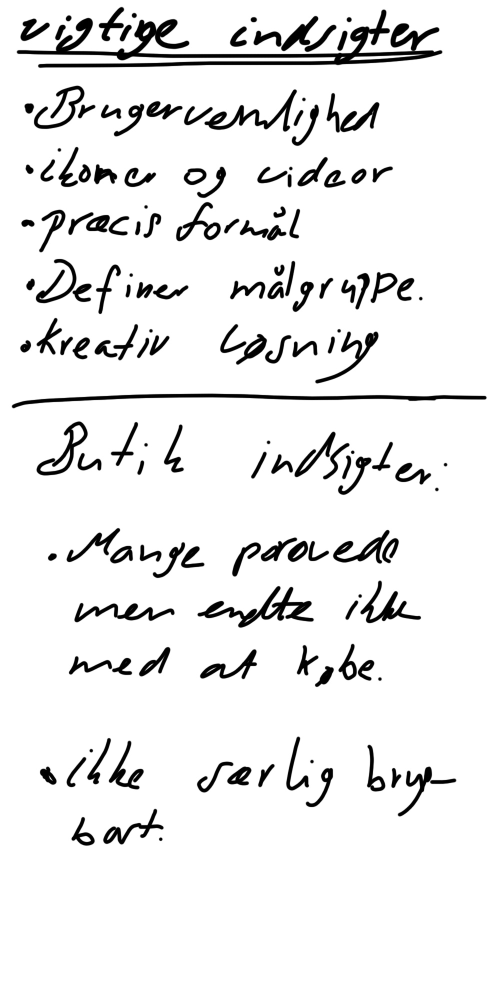

Idé(03.01.05) Endelig prototype (03.03.02) og Pitch(03.03.03)
Læringsmål:
- Viden Viden om multimediedesignerens placering i værdikæden i digital produktion
- Viden Viden om erhvervets centralt anvendte teknologier til produktion af digitalt indhold
- Viden viden om grundlæggende metode og teori om brugerforståelse i digital indholdsproduktion.
- Færdigheder Indsamle og anvende empiriske data om brugere og brugssituationer
- Færdigheder Planlægge og evaluere en digital indholdsproduktion i forhold til et givet oplæg
- Færdigheder producere digitalt indhold på et grundlæggende niveau med afsæt i brugerforståelse og med afsæt i et givet strategisk oplæg
- Færdigheder formidle udviklingsprocessen for digital indholdsproduktion til interessenter med faglig indsigt.
- Kompetencer Indgå i tværfaglige arbejdsprocesser i design og udvikling af digitalt indhold
- Kompetencer Under vejledning tilegne sig grundlæggende viden, færdigheder og kompetencer inden for design og udvikling af digitalt indhold.
Research, Metoder og fremgangsmåde
I Tema 03 arbejdede vi med at researche for at forstå brugerne, og på baggrund af det finde idéer til at løse brugernes og virksomhedens behov. En ulempe med at arbejde med brugergrænseflade, er at man designer noget på baggrund af diffuse antagelser og påstande. Ved hjælp af de værktøjer vi lærte i det her tema, kan antagelserne og påstandene backes up med resultater, så de bliver mere pålidelige.Det endelige resultat af det her tema var prototype projektet. Hensigten med projektet var at skabe min egen tøj side, blot i prototype format. Til det arbejdede jeg meget med at researche på hinanden, desk-researche, interviews og observere i en fysisk butik for at få tilstrækkelig data nok til at udarbejde indsigter. Indsigterne kan bruges til at afkræfte eller bekræfte ens antagelser, og derefter sigte mere målrettet efter en mere effektiv brugergrænseflade.
Jeg brugte især interviews, survey-research og desk-research til mine indsigter, da de gav mig langt bedre resultater end f.eks. tænke-højt-testen, da personen oftest glemte at fortælle hvad han/hun tænkte. Survey-research og desk-research gav nogle mere definitive svar som var meget mere håndgribelig. Dette skyldes at survey-researchen var baseret på flere brugere, og skabte mere troværdighed i og med at der var flere som døjede med samme problemstillinger. Gennem vores research fandt vi i gruppen mange problemstillinger som blev diskuteret og frembragt. Dertil startede vi med en idé som skulle skitseres, idéen var på baggrund af de indsigter vi havde fundet frem til i de tidligere researches, dvs. en idé som skulle takle de problemstillinger vi havde. Idéen blev sammenlagt i et docs dokument, hvor man sammen diskuterede fordele og ulemper, samt et Heatmap over alle idéerne. Efter opsamlingen af vores skitser (low Fidelity prototype), lærte vi om hi-fi (high Fidelity prototyper) prototyper og hvordan deres brugergrænseflade blev skabt.



Prototype
I den næste opgave skulle vi designe vores egen prototype, ved hjælp af Adobe XD. Jeg brugte meget af transitions, components, assets, panel til mit prototype. Derudover fik vi en kort guide til brug af UI kits, så vi ikke skulle designe de enkelte dele helt fra bunden. Jeg benyttede mig af Superstore ecommerce kit. UI-kittet gjorde arbejdet en del nemmere, da de enkelte komponenter var allerede designet på forhånd. Jeg ændrede blot detaljerne såsom, shadows, color og size.Min målgruppe med min idé var design og fashion entusiaster som kunne finde på at bruge mange penge på tøj, altså folk som normalt går i GUCCI, Prada og Louis Vuitton. Jeg lavede altså en prototype på baggrund af at fange deres opmærksomheder. Efter jeg færdiggjorde min første prototype, pitchede jeg dette til min vejleder og gruppe og dokumenterede mine beslutninger.
Det feedback jeg fik fra vejlederen(Maria) var virkelig meningsfuld og velargumenteret, i og med, at jeg lærte betydningen af microcopying og copying, samt en mere defineret brugerforståelse. Hvis man kigger på prototype1 i højrecolonne, kan der ses at jeg benytter mig meget af microcopying såsom 30% off osv. hvilket store mærker som GUCCI og Louis Vuitton slet ikke benytter sig af. De behøver ikke outlet skilte, rabatkoder, eller flashy text hvor der står køb, for deres loyale enthusiastiske kunder skal nok købe uanset om de skilter med rabat eller ej, spørgsmålet er bare om det tiltaler dem. Vejlederen mente derudover at den første prototype godt kunne ligne noget fra Jack & jones. Af den grund ændrede jeg layoutet på min endelige prototype, som kan ses ved at klikke på pilen efter man har afsluttet visning af den første prototype i højre kolone. Jeg har fjernet det meste af microcopy tekst som vejlederen foreslog. Den endelige prototype er også primært lavet ud fra indsigterne som er indhentet fra researches, feedback fra pitch, og inspiration fra heatmap.
Jeg vil afslutte med at sige, at temaet var fyldt med gode og brugbare informationer, som kan benyttes i den virkelige verden, især hvis man gerne vil præsentere en idé eller løsning.
Prototype1 og Endelige prototype (tryk på pilen)